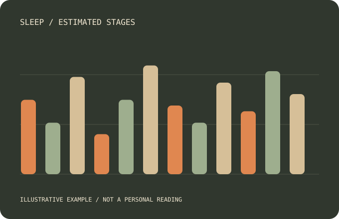

Estimated stages
Explore light, deep and REM sleep estimates alongside time asleep. A wearable estimate is different from a clinical sleep study.
A late finish at work. A different bedtime. Start noticing the patterns behind your nights, beyond a single score.
Imagine two nights with a similar duration but different bedtimes and interruptions. The useful question is how your patterns change over time, rather than whether one score looks impressive.
Illustrative example, not an actual customer result.
Get my sleep-focused buying guide
Explore light, deep and REM sleep estimates alongside time asleep. A wearable estimate is different from a clinical sleep study.
Notice how bedtime and wake-time patterns fit the routine you actually have. Use several nights for context.
Your guide explains sleep features and the membership needed to explore them. It does not diagnose a sleep condition.
Look at the contributors and patterns behind the number. We show one annotated example and link the evidence, so you can decide whether those insights would be useful to you.
Explore sleep-sensing evidence See membership and ownership costsUnderstand the evidence, choose the right sizing kit and see membership clearly before you buy.
Explore our evidenceChoose your finish and size on Shopee, or get a personalised guide if you would like help with fit and features.
An active Oura Membership provides detailed insights. See membership and ownership costs before deciding.
Your guide links to the matching Ring 4 finish at OURA SG on Shopee. Confirm your size and the current listing terms there.